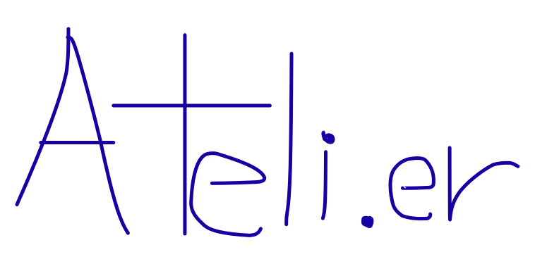
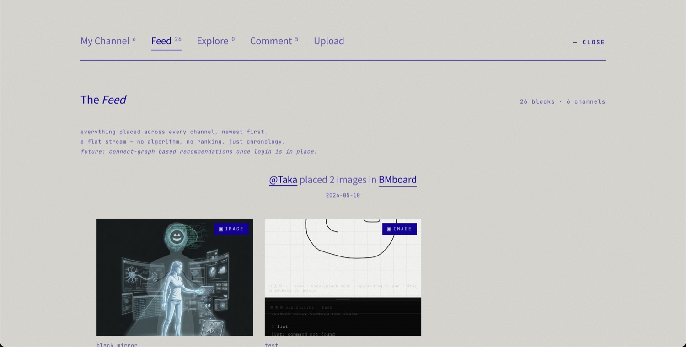
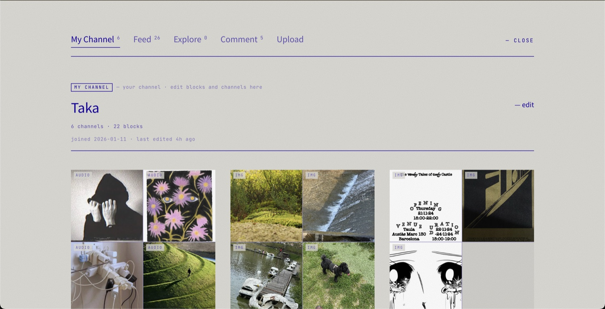
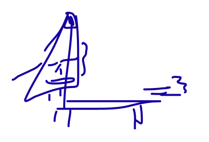
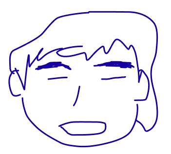

Spotifyを開くたび、少し疲れた。
便利なのはわかってる。でも、誰かのアルゴリズムの上で音楽を聴いてる感覚が拭えなかった。
昔CDを並べていた棚みたいに、自分だけのコレクションが欲しかった。タグをつけて、自分のペースで積む。そういう静かで個人的な場所を、自分で作ることにした。

— 開発日記 / the honest version
これは、きれいな設計書じゃない。
数字を消す怖さと、消えたコレクションと、
「まだ途中でいい」に辿り着くまでの話。
——Ateli.erを作った本人の、裏話。
便利なのはわかってる。でも、誰かのアルゴリズムの上で音楽を聴いてる感覚が拭えなかった。
昔CDを並べていた棚みたいに、自分だけのコレクションが欲しかった。タグをつけて、自分のペースで積む。そういう静かで個人的な場所を、自分で作ることにした。
Ateli.erはフランス語で「アトリエ」、作業場のこと。マークにしたのは、手描きの菫（すみれ）。少し歪んで、少し不完全。
文字（ワードマーク）も、定規を使わず手で書いた。きれいに整えすぎないことが、この場所の約束みたいなものだから。

SNSの当たり前を、全部やめた。いいね数もフォロワー数も、前面に出さない。
でも、見せたかったのは他人の数字じゃなくて、他人の選択そのものだった。数字を消して初めて、「選び方」が主役になった。

ある日、ユーザーが積み上げたブロックがまるごと消える事故が起きた。キュレーションが主役のアプリで、コレクションが消える。最悪だった。
原因を潰して、多重のセーフガードと復旧の手順を作り込んだ。安易な自動リロードは禁止。データは、何があっても守る側に倒す設計へ変えた。
複数のデバイスで使うと、古いデータが新しいデータを上書きすることがあった。せっかくの編集が、巻き戻る。
引っ張る前に必ず送る（pull前にpush）、画面に戻った瞬間にも送る。visibilitychange まで面倒を見て、ようやく巻き戻りを止めた。
コレクションが美しく見える場所にしたい。なのに、ある経路の画像がそもそも表示されない（MIMEが壊れてた）し、出ても重かった。
Ateli.erには「Courtyard（中庭）」がある。タイムラインもバズもなく、ただ静かに、誰かのチャンネルが並んでいる。
music, video, image, URL——「これだ」と思ったものを、フィードじゃなくチャンネルに積む。CONNECTは、フォローでもいいねでもない、共鳴の静かな印。

最初は招待制だった。でも、静かな中庭は誰にでも開いていいと思い直した。招待制をやめて、誰でも登録できるように。
裏では、データの持ち方をDB-firstへ移して、どのデバイスからでも自分のコレクションが戻るようにした。派手じゃないけど、これが土台。
「なぜかここに長くいてしまう」と言われることがある。理由はたぶん、急かされないからだ。通知もタイムラインもない。ただ、誰かが丁寧に選んだものが、静かに積み重なっている。
琵琶湖のそばで、この中庭を育てている。まだ途中でいい。それが、この場所のルールだから。


